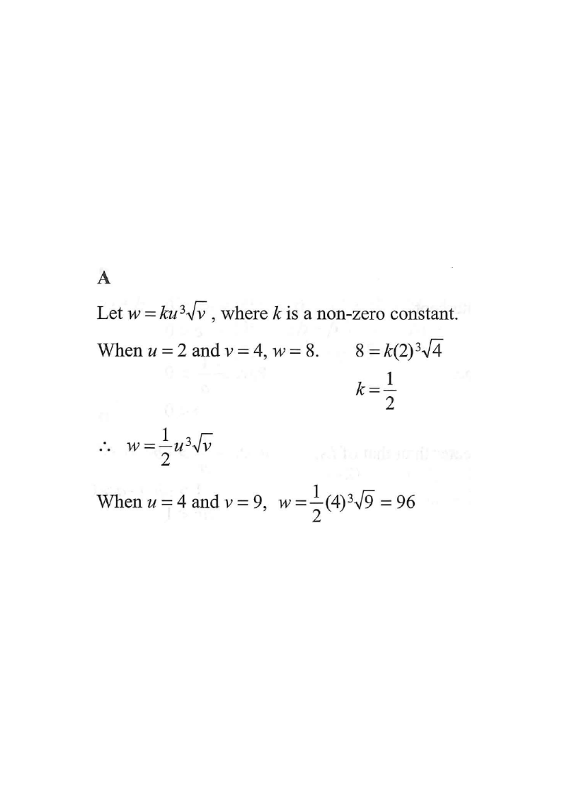

Scroll the solution to highlight each step.
It is given that $w$ varies as the cube of $u$ and the square root of $v$. When $u=2$ and $v=4$, $w=8$. When $u=4$ and $v=9$, $w=$

$w$ varies as the cube of $u$ and the square root of $v$, so
$$w = k\,u^{3}\sqrt{v}$$
where $k$ is a non-zero constant.
Hint: “varies as” means “is directly proportional to” — join the parts with one constant $k$.
Use the given data $u=2,\;v=4,\;w=8$:
$$8 = k(2)^{3}\sqrt{4} = k(8)(2) = 16k$$
$$k = \frac{8}{16} = \frac{1}{2}$$
Hint: substitute the known triple $(u,v,w)$ to solve for $k$.
Putting $k=\dfrac{1}{2}$ back into the variation equation:
$$w = \frac{1}{2}\,u^{3}\sqrt{v}$$
Hint: this single formula now works for any $(u,v)$.
When $u=4$ and $v=9$:
$$w = \frac{1}{2}(4)^{3}\sqrt{9} = \frac{1}{2}(64)(3) = 96$$
Hint: $4^{3}=64$ and $\sqrt{9}=3$; multiply by $\tfrac12$ last.
Question. It is given that \(z\) varies as the square of \(x\) and the cube root of \(y\). When \(x=2\) and \(y=27\), \(z=24\). Find \(z\) when \(x=3\) and \(y=8\).